Send Apple Card transactions to Linear
WalletFeed sends your Apple Card, Apple Cash and Savings transactions from your iPhone to Linear. In Linear, WalletFeed makes one issue for each transaction. You make a personal API key in Linear, and then you paste the key in WalletFeed.
Before you start
You must have these items:
- An iPhone with iOS 26 or a newer version. WalletFeed is available only in the US.
- WalletFeed, with access to your Wallet accounts.
- WalletFeed Pro, a subscription with a 1-week free trial, or a one-time Lifetime purchase. You must have WalletFeed Pro to send transactions to Linear.
- A Linear account, from Linear's sign-up page. You can use the Free plan of Linear.
Your key stays on your iPhone
- WalletFeed keeps the API key in the Keychain on your iPhone. iOS encrypts the Keychain.
- The API key does not go to iCloud Keychain or to your other devices.
- WalletFeed has no account and no servers. No person at WalletFeed can see or get the API key.
- Your iPhone sends the API key only to Linear, in each request to Linear.
- When you delete the destination, WalletFeed deletes the API key from your iPhone. You can also revoke the key in Linear.
Step 1: Make a personal API key in Linear
With a personal API key, WalletFeed can make issues in your Linear workspace.
-
On your iPhone, open Linear's Security & access settings.
-
If Linear shows Log in to Linear, tap Continue with email.
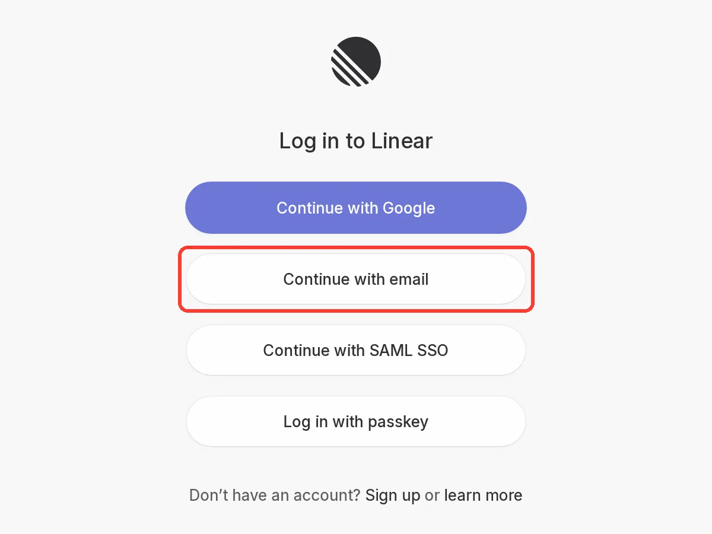
-
Type your e-mail address.
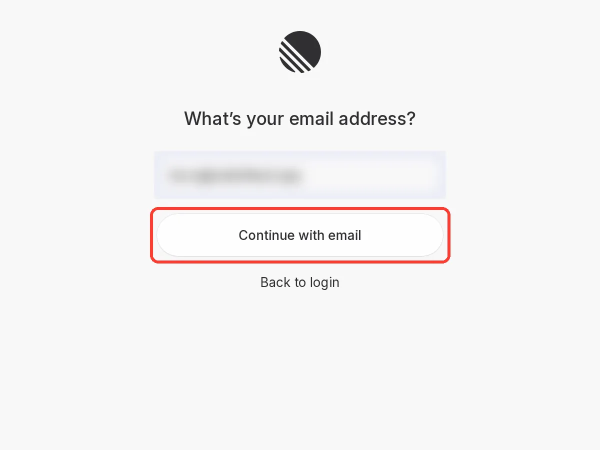
-
Tap Continue with email.
-
If Linear shows Verifying it’s you, tap the Verify you are human checkbox.

-
On the Check your email page, tap Enter code manually.
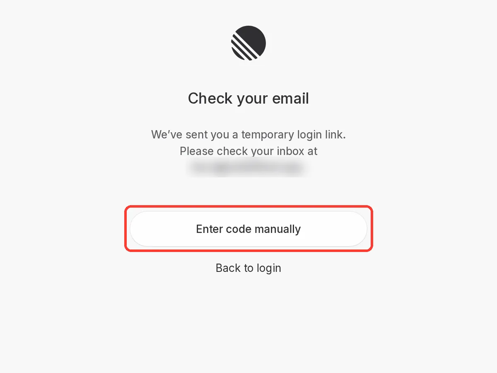
-
Open the e-mail from Linear with the subject “Login for Linear”.
The e-mail has a code of 10 letters and numbers.
-
In Linear, type the code in the field.
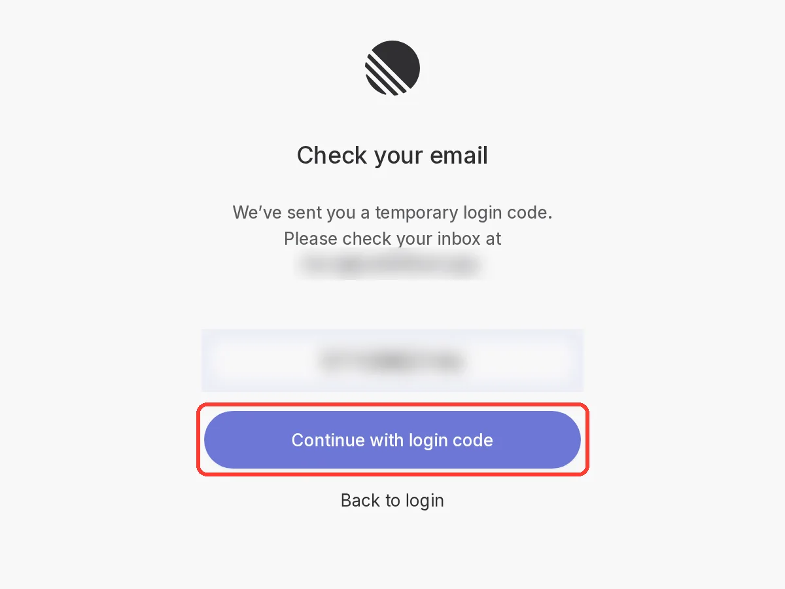
-
Tap Continue with login code.
Result: Linear shows Security & access.
-
If Linear does not show Security & access, open Linear's Security & access settings again.
-
Scroll to Personal API keys, below Sessions and Passkeys.
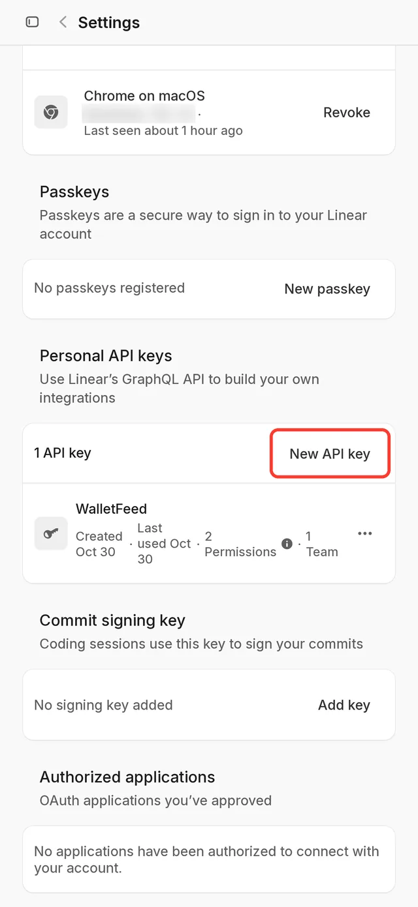
-
Tap New API key.
Result: Linear shows Create API key.
-
In Key name, type
WalletFeed.The name helps you find the WalletFeed key in the list of keys.
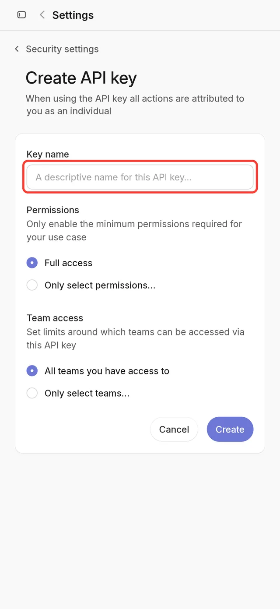
-
In Permissions, tap Only select permissions….
Linear selects Full access when the page opens. WalletFeed can also use a key with Full access, but WalletFeed uses only Read and Write.
-
Select Read and Write. Do not select Admin.
Result: Linear also selects Create and update issues and Create comments.
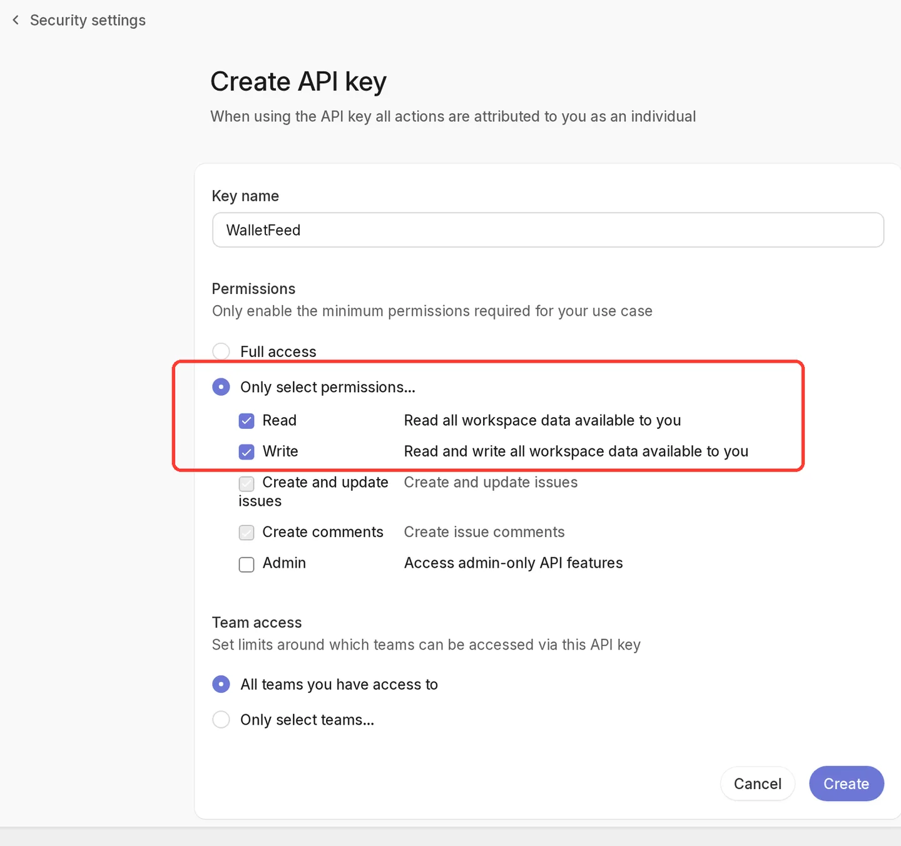
-
Optional: In Team access, tap Only select teams….
Linear selects All teams you have access to when the page opens. With Only select teams…, the key gets access to only the teams that you select.
-
If you tapped Only select teams…, tap Select teams….
-
If Linear shows the list of teams, tap the team that will receive the issues.
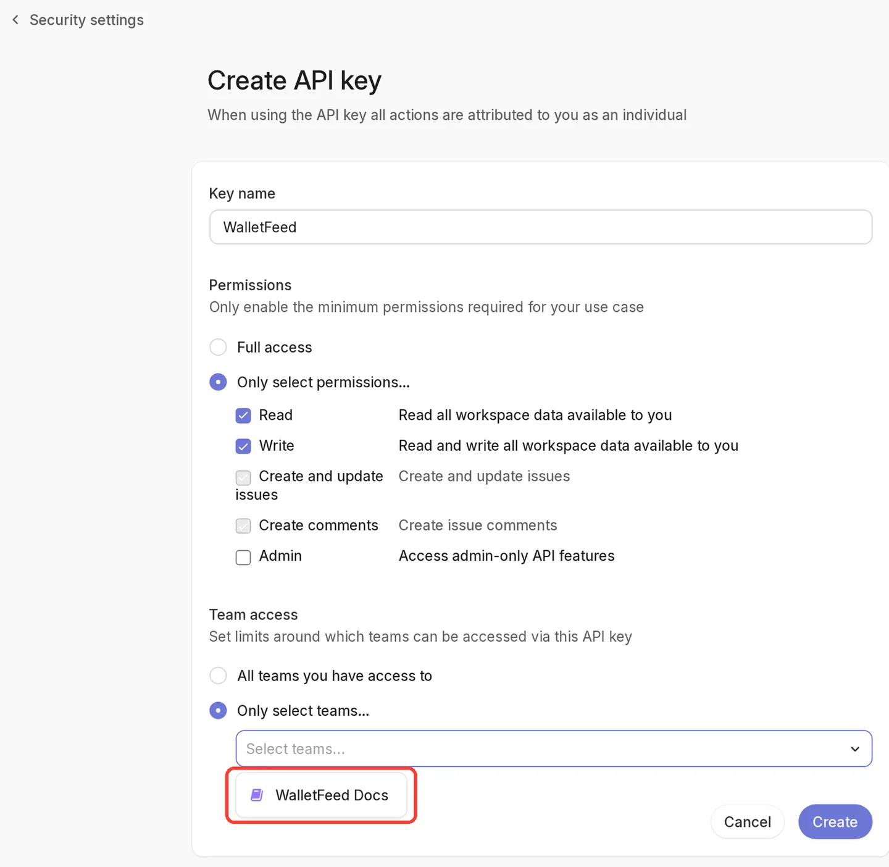
-
Tap Create.
Result: Linear shows the new key below API key, with the text “This API key is shown only once. Please copy it now.”
-
Tap the copy button to the right of the key.
The copy button is an icon with no text. The key starts with
lin_api_.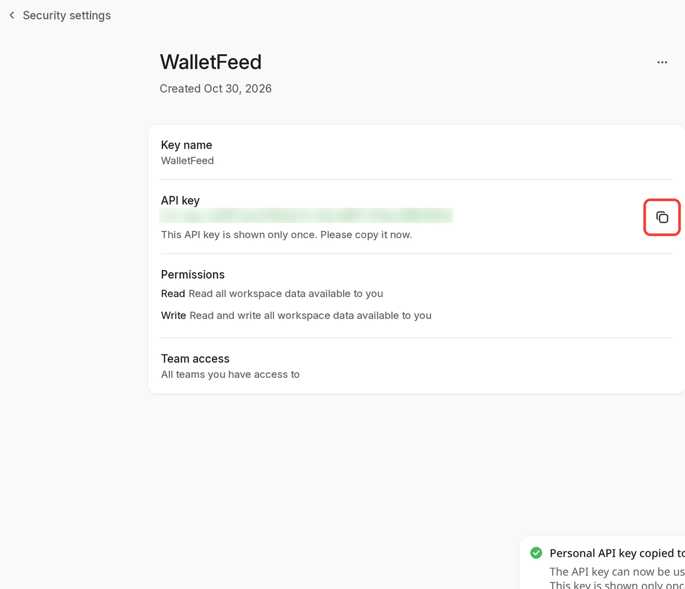
-
Keep the Linear page open until you paste the key in WalletFeed.
Linear shows the key only one time. While the page is open, you can copy the key again.
Step 2: Add Linear in WalletFeed
-
Open WalletFeed.
-
Optional: If you have WalletFeed Pro and your workspace is on Linear's Free plan, set Initial History to Today. Then the new destination receives no transactions from before today.
-
Tap Settings (the gear button) at the top of the screen.
-
In the Sync section, set Initial History to Today.

-
Tap Done.
-
-
Tap Destinations.
-
Tap + at the top of the screen.

-
In Sheets & Databases, tap Linear. You can also type
Linearin the search field. -
If WalletFeed shows the WalletFeed Pro screen, get WalletFeed Pro on that screen. Then the Linear screen opens.
-
Paste the key in the API Key field. WalletFeed keeps the key in the Keychain on your iPhone.

-
After WalletFeed reads the key, select a team in Team. This team receives the issues.
-
Optional: In Project, select a project. If you do not select a project, Project stays at None. A project must be in Linear before WalletFeed can show it.
Below Project, WalletFeed shows “Each transaction becomes an issue to review.”
-
Tap Add.
-
Read the message Send Transactions to Linear? The message gives the fields that Linear receives, the accounts and the start date.
-
Tap Send. If you tap Cancel, WalletFeed does not add the destination.
Then Destinations shows the new destination with the name of the team, for example “Linear · Finance”.
Step 3: Set a filter
With a filter, WalletFeed sends only some transactions to Linear. If your workspace is on Linear's Free plan, set a filter.
-
In Destinations, tap the Linear destination.
-
Set Filter to on.

-
Optional: Set Include to Purchases. Then Linear receives no refunds or payments.
-
Optional: In Minimum, type an amount, for example
25. Then Linear receives only transactions of $25 or more. -
Optional: In Accounts or Categories, select only the accounts or the categories to send to Linear.
-
Optional: To send previous transactions with this filter, tap Send History (refer to Send previous transactions).
Data that Linear receives
Your transactions go from your iPhone directly to Linear. WalletFeed has no account and no WalletFeed servers. After Linear receives your transactions, the terms of Linear are applicable to them.
WalletFeed puts each issue in the team that you selected. If you selected a project, WalletFeed also puts the issue in that project. If Triage is on for the team, a new issue goes to Triage. If Triage is off, the issue goes to the first Backlog status of the team.
To find the issues on a computer, do these steps:
-
On a computer, open Linear in a web browser.
-
In the left column, find your team in Your teams.
-
If Linear does not show Issues below the name of your team, click the name of your team.
-
Below the name of your team, click Issues.
-
At the top of the list, click All issues.
Result: If Triage is off, Linear shows the issues from WalletFeed in Backlog.
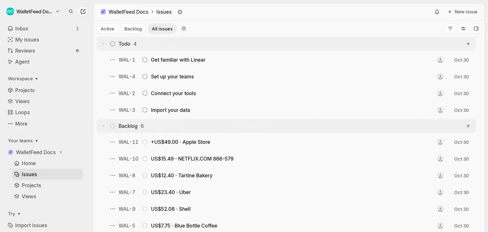
The title of each issue has the amount and the merchant, for example $6.75 · Blue Bottle Coffee. The description of the issue is a table with these rows:
| Row in the description | Value from Wallet |
|---|---|
| Date | The date of the transaction, for example 2026-10-29 |
| Merchant | The merchant name, or the description if Wallet has no merchant name |
| Amount | Less than zero for a charge, for example -84.12, and more than zero for a refund or a payment |
| Currency | The currency code, for example USD |
| Category | The WalletFeed category, for example Groceries |
| Status | The Wallet status, for example pending, or booked after the charge posts |
| Pending | Yes or No |
| Account | The Wallet account, for example Apple Card |
| Description | The description from Wallet |
| Type | The type of transaction, for example pointOfSale or refund |
| MCC | The merchant category code, for example 5411 |
| Foreign Amount and Foreign Currency | The amount and the currency of a charge in a different currency |
| WalletFeed ID | The transaction ID, in the last row |
WalletFeed does not write a row that has no value. In the description, an amount has no zeros at the end, for example -23.4 for $23.40.
Each issue also has an item with the name WalletFeed in its Resources section. WalletFeed uses this item and the WalletFeed ID row to find the issue again in the team that you selected.
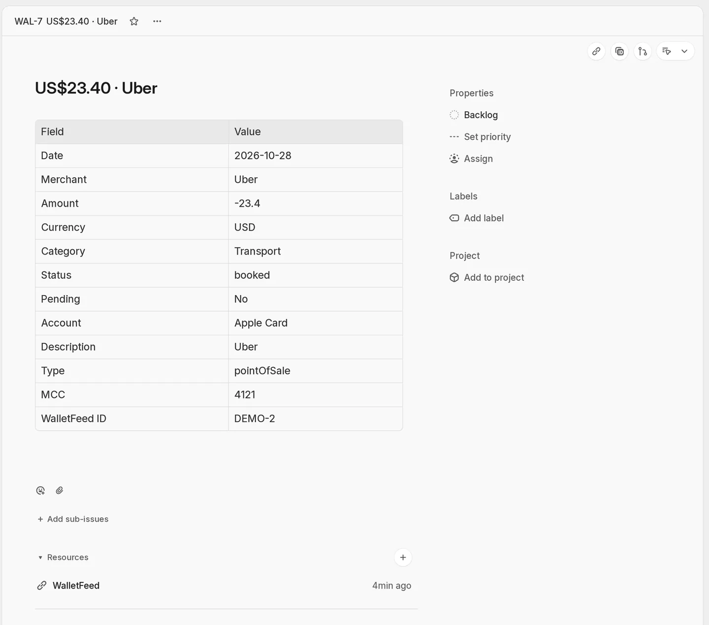
New and changed transactions
While WalletFeed is open, Linear receives changes in seconds. When WalletFeed is not open, iOS starts WalletFeed approximately 1 hour or less after a change in Wallet. If Background Sync is on in Settings › Sync, WalletFeed then sends the change.
Background Sync is in Settings › Sync. It stays on until you set it to off. After your iPhone starts again, WalletFeed sends nothing to Linear until you type your iPhone passcode one time.
A pending charge becomes an issue with · Pending at the end of the title. When the charge posts, WalletFeed changes the title and the description of the same issue.
A refund and its charge become two different issues. The title of a refund or a payment has + before the amount, for example +$49.00 · Apple Store.
If a pending charge becomes a declined charge, or if Wallet removes a transaction, WalletFeed archives the issue. The archived issue stays in Linear.
Changes that you make in Linear
When a transaction changes, WalletFeed writes the title and the description of its issue again. If you changed them in Linear, WalletFeed replaces your changes. WalletFeed does not change the status or the assignee of the issue.
Send previous transactions
A new Linear destination also receives previous transactions from the start date in Settings › Sync › Initial History. Initial History is All until you change it. But a new Linear destination receives a maximum of 30 days of previous transactions.
To send transactions from a longer period, use Send History:
- In Destinations, tap the Linear destination.
- If your workspace is on Linear's Free plan, set a filter (refer to Step 3). Each previous transaction becomes one issue.
- Tap Send History.
- Select a period: 30 Days, 90 Days, 1 Year or All.
- Read the message Send History to Linear? The message shows “Each transaction can become an issue.”
- Tap Send.
WalletFeed sends the newest transactions first. The destination screen shows the number of transactions that WalletFeed sent. Send History also uses the filter.
To stop Send History:
- On the destination screen, tap Send History.
- Tap Stop Sending. The issues that WalletFeed sent stay in Linear.
Change or remove the destination
Send only some transactions
To change the transactions that go to Linear, change the filter on the destination screen (refer to Step 3).
Use a different team or project
The destination screen shows the Team, and the Project if you selected a project. You cannot change them. To use a different team or a different project:
- Add Linear again with the new team or the new project (refer to Step 2).
- Delete the previous Linear destination (refer to Remove Linear from WalletFeed).
Stop the destination for a time
- In Destinations, tap the Linear destination.
- Set Enabled to off.
To start the destination again, set Enabled to on.
Replace the key
You can replace the key, for example after you revoke the key in Linear.
- In Linear, make a new personal API key (refer to Step 1).
- In WalletFeed, tap the Linear destination in Destinations.
- Tap Replace Key.
- Paste the new key in the API Key field.
- Tap Replace. Before WalletFeed keeps the new key, it makes sure that the key can get access to the team.
Remove Linear from WalletFeed
- In WalletFeed, tap the Linear destination in Destinations.
- Tap Delete.
- In the message, tap Delete. The issues that WalletFeed sent stay in Linear.
- Optional: Revoke the key in Linear (refer to Revoke the key in Linear).
Revoke the key in Linear
After you revoke the key, WalletFeed cannot connect to Linear with it.
-
On your iPhone, open Linear's Security & access settings.
-
Scroll to Personal API keys.
-
In the row of the WalletFeed key, tap ….
If two keys have the name WalletFeed, the text “Created” in each row gives the date of the key.
-
Tap Revoke API key.
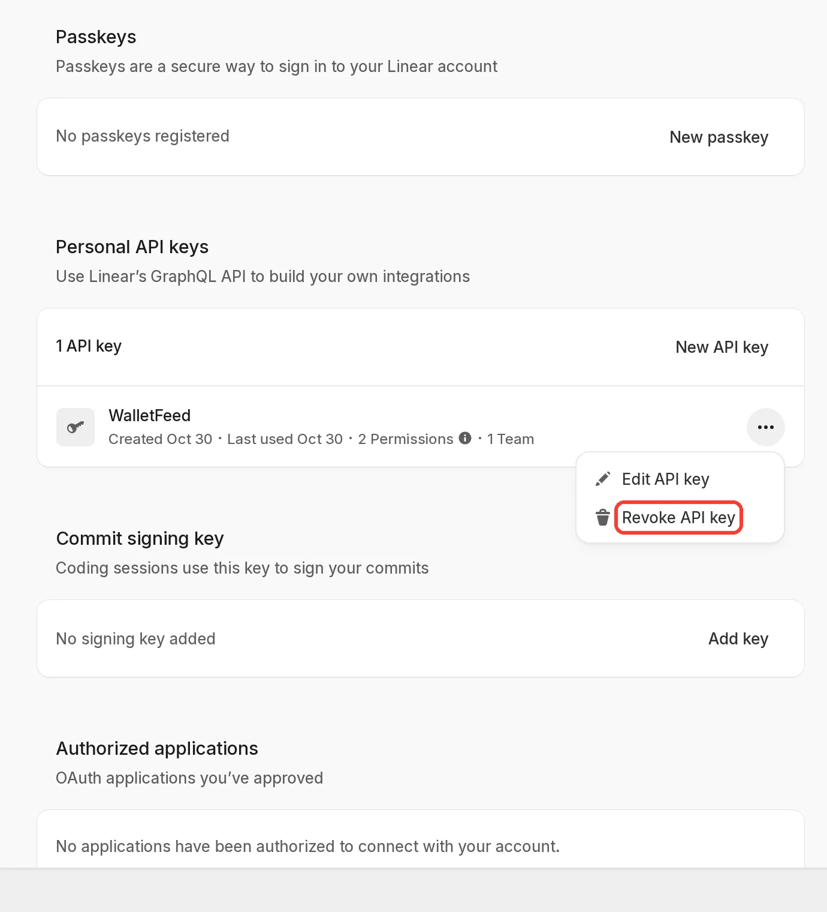
-
In the message Revoke "WalletFeed"?, tap Revoke.
Result: Linear shows "WalletFeed" key revoked.
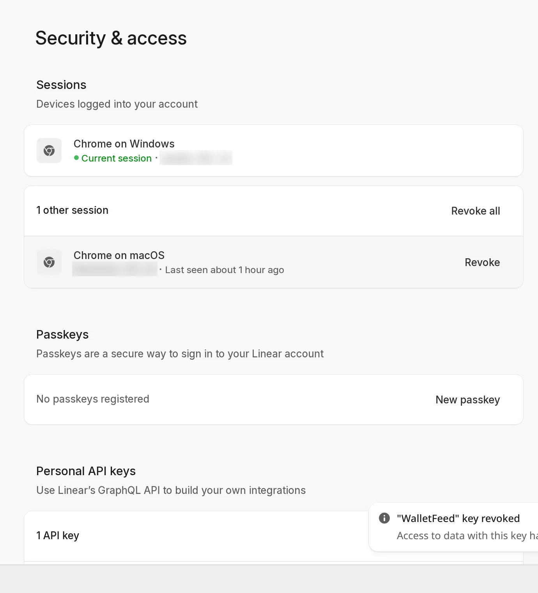
If there is a problem
If WalletFeed shows “Key rejected”
Linear did not accept the key because the key is not correct, or because a person revoked the key in Linear.
- In Linear, make a new personal API key (refer to Step 1).
- If WalletFeed shows the message on the Linear screen, paste the new key in the API Key field.
- If WalletFeed shows the message on the destination screen, replace the key (refer to Replace the key).
If the destination shows “Authentication failed”
Linear did not accept the key, or the key cannot make or change issues in the team.
- In Linear, make a new personal API key with Full access, or with Read and Write.
- In WalletFeed, tap the Linear destination in Destinations.
- Tap Replace Key.
- Paste the new key in the API Key field.
- Tap Replace.
If WalletFeed shows “Give the key Read and Write access to the team”
Linear does not let the key get access to the team.
- In Linear, make a new personal API key with Full access, or with Read and Write.
- If you tap Only select teams…, select the team that you use with WalletFeed.
- If WalletFeed shows the message on the Linear screen, paste the new key in the API Key field.
- If WalletFeed shows the message on the destination screen, replace the key (refer to Replace the key).
If WalletFeed shows “This key can't see any teams”
The key has access to no team in Linear.
- In Linear, make a new personal API key with access to your team.
- On the Linear screen in WalletFeed, paste the new key in the API Key field.
If WalletFeed shows “Linear is limiting requests”
Linear has a limit for each user in each hour, and your account is at that limit.
- Wait for 1 minute.
- If WalletFeed shows the message on the Linear screen, tap Try Again.
- If WalletFeed shows the message on the destination screen, replace the key again (refer to Replace the key).
If new transactions do not become issues
On Linear's Free plan, a workspace can have a maximum of 250 issues. This limit does not include archived issues.
- To decrease the number of issues in the limit, archive the issues that you do not use. For example, archive the 4 issues that Linear puts in a new workspace.
- To send all your transactions to Linear, change your workspace to a different Linear plan, for example Basic. Basic has no limit on issues.
- To send only some transactions, set a filter (refer to Step 3).
If one transaction has two issues
If a person removes the WalletFeed ID row and the WalletFeed item in Resources, WalletFeed makes a new issue. If a person moves the issue to a different team, WalletFeed also makes a new issue.
- In Linear, archive or delete the issue that has no WalletFeed ID row, or the issue in the different team. WalletFeed continues to change the other issue.
- Keep the WalletFeed ID row and the WalletFeed item in Resources in each issue.
If Linear receives changes only when WalletFeed is open
Background Sync is off, or your iPhone started again and you did not type its passcode.
- In WalletFeed, tap Settings (the gear button) at the top of the screen.
- In the Sync section, set Background Sync to on.
- Tap Done.
- After your iPhone starts again, type its passcode one time.
If Linear does not let you make an API key
An admin of your Linear workspace does not let members make API keys. Admins can always make API keys. On the Free plan, all users are admins.
-
Tell an admin of the workspace to set API key creation to All members. API key creation is in Settings › Administration › API.
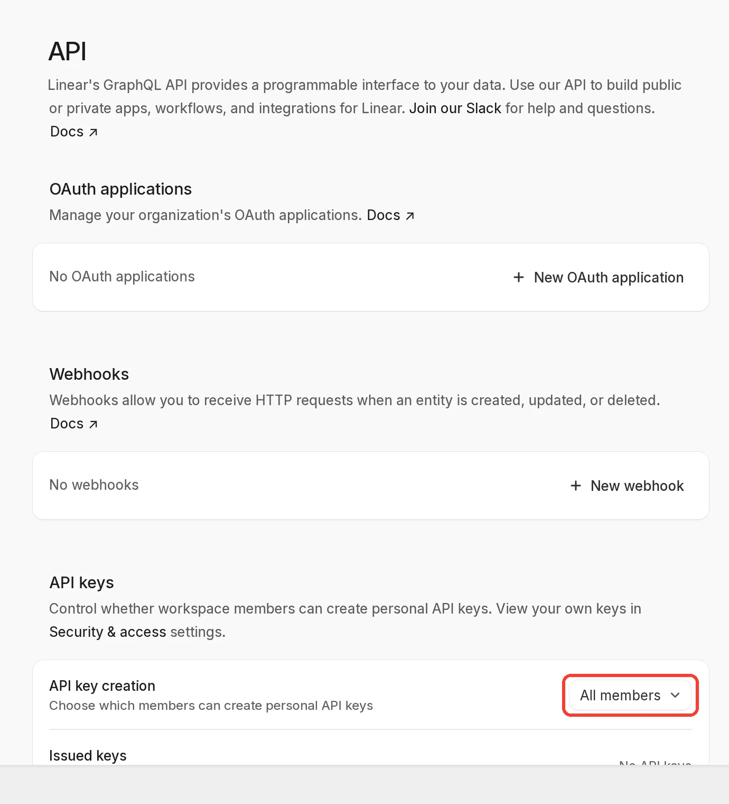
-
After the admin changes API key creation, make the key (refer to Step 1).
Related
Updated October 30, 2026